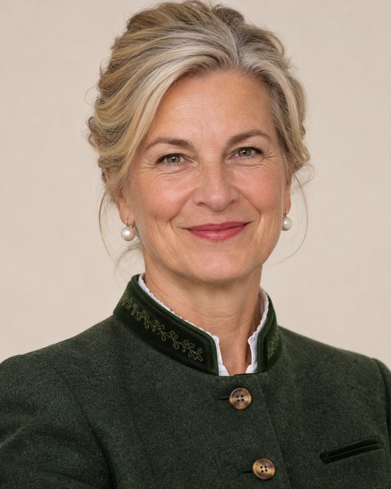

Aufbauorganisation
Organigramm
Stand: 1. November 2026. Wählen Sie eine Organisationseinheit, um Leitung, Aufgaben und Ansprechpersonen zu sehen.

■ Amtsleitung▭ Stabsstelle (gestrichelt)▬ Sektion mit Abteilungen

Mag.a Dr.in Elisabeth HinterbergerPräsidentin
HR Dipl.-Ing. Franz-Josef PichlerVizepräsident
PräsidialbüroMag.a Katharina Novak
Presse und KommunikationFlorian Auer, MA
Datenschutz und Interne RevisionMag.a Julia Kovács
Sektion IPräsidialsektionMag. Gerhard Wallner · Wien
Zur Sektion
I/1Personal und LehrlingsausbildungADir Renate Fuchs
I/2Budget und BeschaffungMag. (FH) Markus Berger
I/3Amtsgebäude und Inneres ServiceIng. Ivana Dvořák
I/4Formular- und StempelwesenOAR Alois Stempfl
Sektion IIGrundsatz, Sonderfälle und SonstigesDr.in Andrea Schwarzl · Wien
Zur Sektion
II/1GrundsatzangelegenheitenMag.a Maria Eder
II/2Abgrenzung Besonderes – SonstigesMag. Wolfgang Sonnleitner
II/3Föderale Grenzfälle (Bund – Länder)Mag.a Lisa Hofer
II/4Nachsichten und AusnahmenDr. Thomas Nachbaur
Sektion IIIBesondere VerfahrenUniv.-Prof. Dr. Klaus Moosbrugger · Graz
Zur Sektion
III/1Verfahren nach dem BBSAGMag.a Sabine Gassner
III/2Bescheide besonderer ArtMag. Emre Özdemir
III/3BeschwerdevorentscheidungenDr.in Petra Winkler
III/4Fristen, Feiertage und FenstertageRgR Herbert Brückl
Sektion IVAußergewöhnliche EreignisseMag.a Brigitte Leitner · Wien
Zur Sektion
IV/1Lagezentrum BesonderheitenMichael Reiter, BA
IV/2Föhn, Wetterfühligkeit und UnvorhergesehenesDr.in Veronika Lechner
IV/3Kuriositätenkabinett und AmtsarchivHR Dr. Ferdinand Schnitzler
IV/4Prävention des UnwahrscheinlichenSophie Mayr, MSc
Sektion VDigitales und RegisterDI Stefan Gruber · Innsbruck
Zur Sektion
V/1Bundesregister besonderer und sonstiger Angelegenheiten (BRbsA)Mag. Karl Pospischil
V/2IT-Verfahren und Elektronischer Akt (ELAK)DI (FH) Nina Horvath
V/3Daten und SchnittstellenJana Ebner, MSc
V/4InformationssicherheitDI Paul Kaltenbrunner